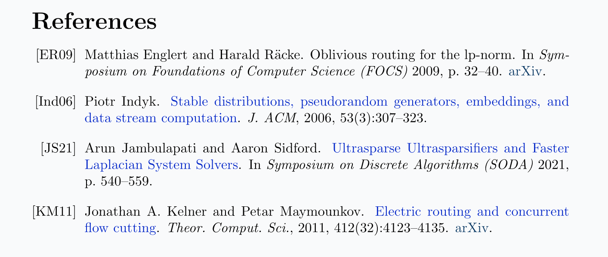

I’ve been looking at customizing my bibliography lately, and ohmygod the bst file format is questionable. I do not know who thought using Reverse Polish Notation was a good idea. Also things write to bbl which then writes to aux and then it is displayed in the pdf somehow except I cannot find the command that I would need to redefine to get the margin to move only for \bibitems and aaaaaaaaaaaaaaaaaaaaaaaaaaaa.
One day I will Tame the BeaST.
Until then, I am content with having figured out how to add doi links as hrefs to paper titles, and also how to add an arXiv link from the bib file when possible.

I am also experimenting with moving the year over to the conference name and shortening “pages” to “p.”. Does one really need to know whichth FOCS happened in 2007? Or worse, which citystatecountry it happened in? One of my co-authors doesn’t like having such frivolous information in the bibliography, and I think I agree. After all, it’s not like anyone has ever had to go to a library and find a book titled “Proceedings of the nth Symposium on blah and blah”.
What I do all the time is highlight the name of the paper from the pdf so that I can google the paper and find the arxiv version. Maybe I can have my bib files better organized to help other people get this with just a single click. But I will talk about bib files separately later.
It also looks terrible when not all entries have hyperlinked titles. Do I really want to reorganize all my bib files? Do I really want to spend the time fixing the references that my co-authors add in? Especially if they use their own citation systems that rewrite the bib file every time?